RExcel
- RExcelはExcelでRの統計処理機能を呼び出す拡張パッケージです
- 個人利用であれば無料で利用できます
- ただしExcel本体は32Bit版を使う必要があります
- (Windows本体は64Bitでも問題ありません)
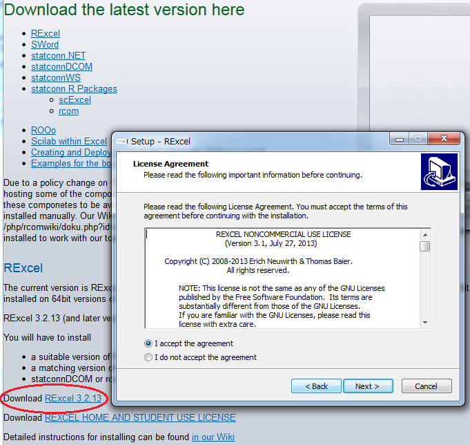
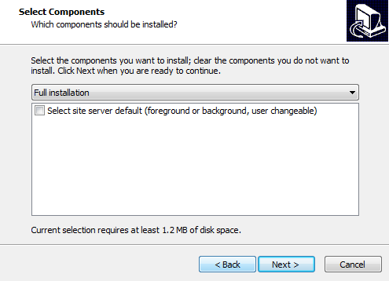
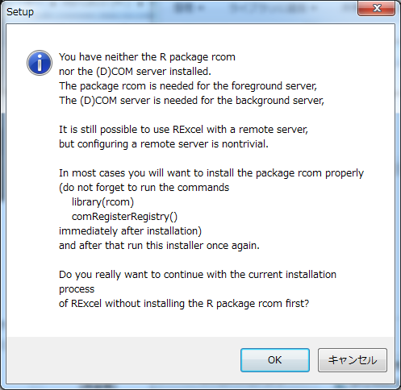
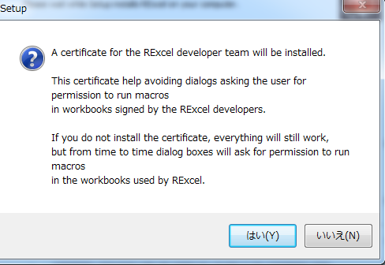
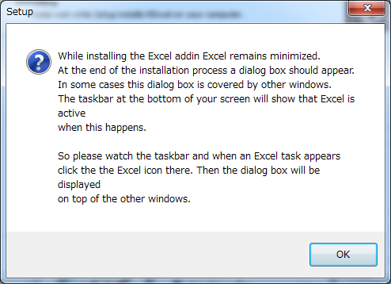
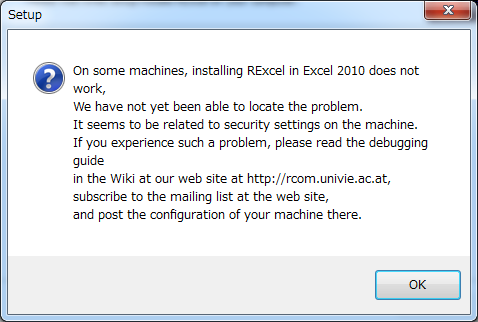
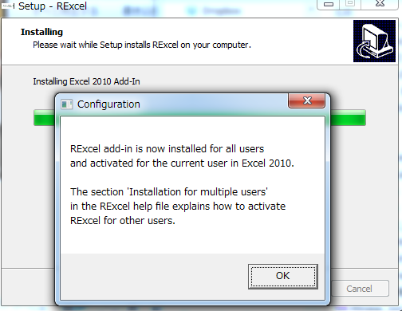
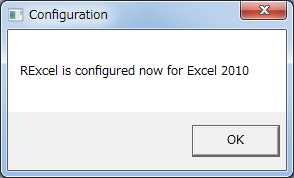
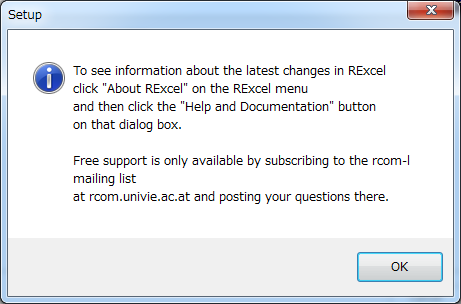
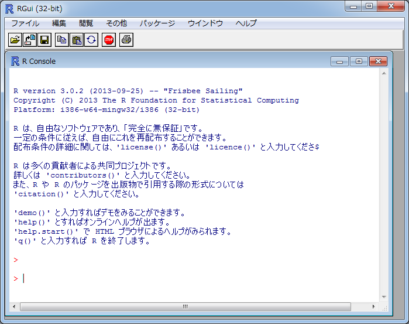
install.packages(c("rscproxy","rcom"),
repos="http://rcom.univie.ac.at/download",lib=.Library);
library(rcom);
comRegisterRegistry()
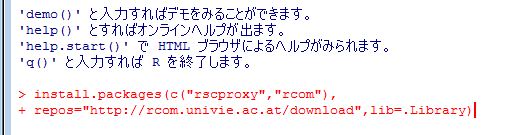
install.packages(c("Rcmdr","RcmdrPlugin.HH"),
lib=.Library,dep=TRUE);
# Rcmdrの不足パッケージを追加
library(Rcmdr);#画面の指示に従ってインストール
# さらに以下を入力
install.packages(c("RcmdrPlugin.mosaic","ENmisc"),
lib=.Library, dependencies=TRUE);
installstatconnDCOM()
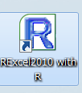
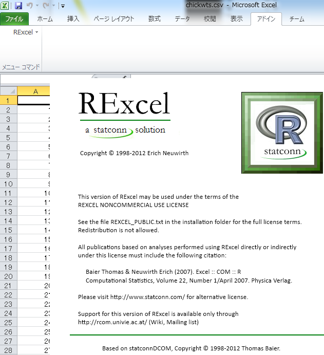
操作方法については『ExcelでR自由自在』を参照ください
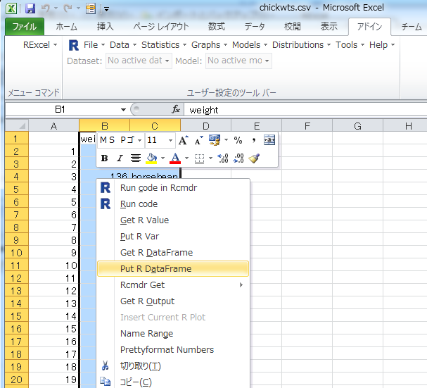